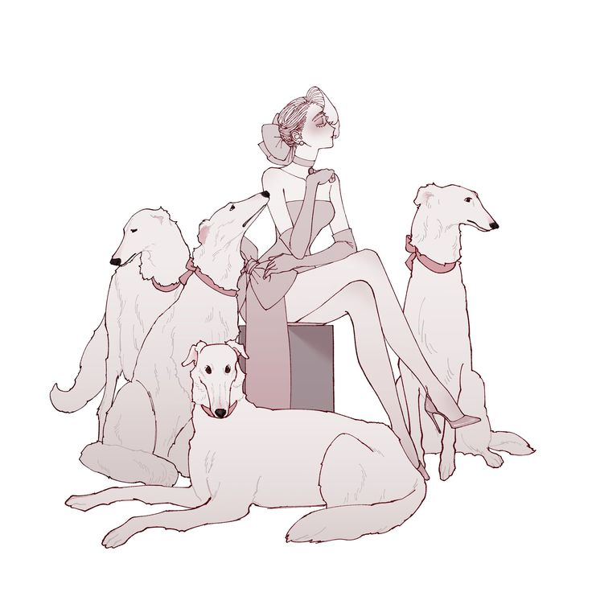
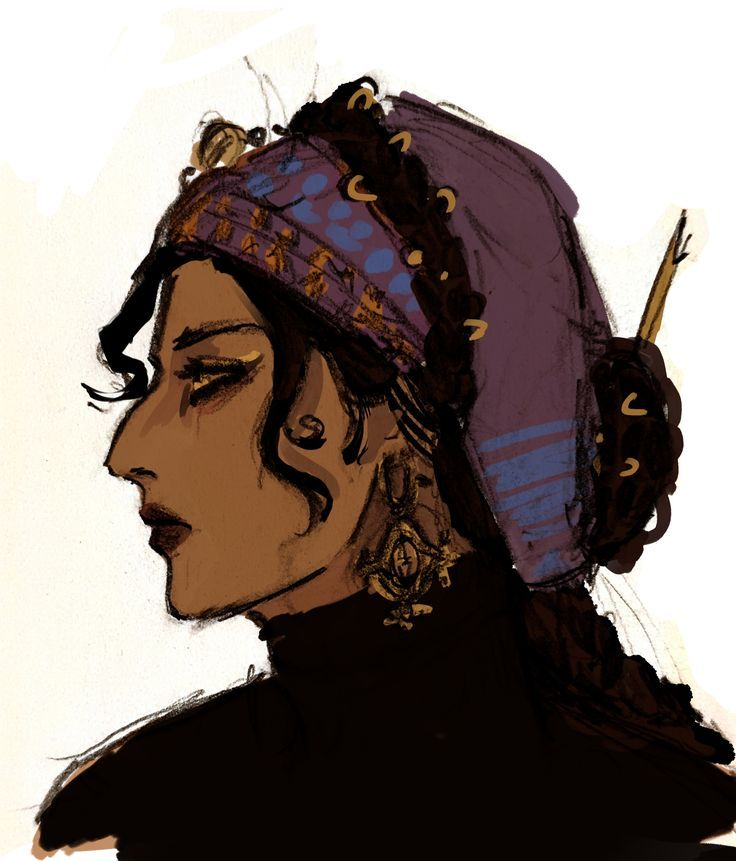
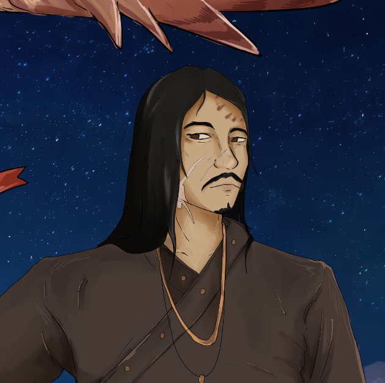

Histoire
Malgré sa longue existence, rares sont les accomplissements que l'on attribue à Zaya. À vrai dire, son histoire ne semble contenir ni grandes victoires ni véritables échecs. Cette absence intrigue les archivistes de Smyrne, qui soupçonnent une modification systématique des archives. Qui aurait pu avoir intérêt à effacer ainsi son passé ?
Le rôle de Sénéchal prit une nouvelle importance avec l'entrée de Smyrne dans la Camarilla, puis avec l'arrivée de Shahar quelque temps plus tard. Zaya avait jusque-là servi Kushi comme maître de guerre, administrant ses possessions à Smyrne juste assez pour lui permettre de poursuivre sa guerre éternelle. Elle dut désormais apprendre à gérer des entreprises, des territoires et à chapeauter le conseil des Primogènes.
Elle porte la voix du Prince en son absence, c'est-à-dire durant la majeure partie de son histoire. Pourtant, elle n'eut jamais à prendre de décision critique en son nom, ni à faire usage de cette autorité.L'age moderne
Zaya et son sire furent tous deux des piliers discrets mais incontournables de la société caïnite. Alliée à Ibrahim Pacha puis à son successeur, Kerem Arslan, Zaya fut profondément marquée par la mort de son sire en 1955.
Elle n'avait pas participé à la reconquête des souterrains menée par la lignée d'Antonius. Ainsi, voir Marcus Forrain revenir et arracher la vie à son sire, un descendant millénaire, fut un choc pour elle, mais un simple gout doux-amer pour une ville qui l'avait déjà oublié de son vivant. Après cela, Zaya se rapprocha davantage du cercle politique interne, du Primogénat et surtout de Kushi.
Relations
Sire
-
 Stefan Todorov
Stefan Todorov - Elle est une infante imposée, mais le temps efface les origines. Elle épaula longuement son sire durant l'Âge sombre, puis se distança pendant la période calme de l'Âge d'or, le laissant vaquer à ses nouvelles occupations.
RELATIONS
-

Louiza - Elle est la seule autre représentante de la lignée d'Atratinus en ville, et le poids du sang semblant important pour Zaya, elle veille sur elle de loin.
-

Emine - Les deux femmes restent alliées malgré la mort de Shahar, qui mit fin à leur ancien trio.
-

Kushi - Elle est l'une de ses plus proches alliées. Kushi semble clairement la considérer comme son égale.
-
 Kerem Arslan
Kerem Arslan - Zaya soutint son accession au pouvoir, tout en veillant à rester en dehors des affaires internes du clan.
-
 Camil
Camil - Durant l'absence de Kushi, Zaya prit Camil sous son aile et lui servit de mentor. Il reste difficile de savoir si elle l'apprécie réellement.
trivia
- Elle tient le harras historique de la ville.
- Elle tient a toujours tenir une place lui permettant de voir toutes les entrées et sorties.